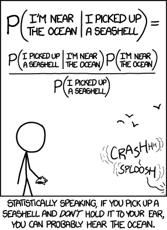
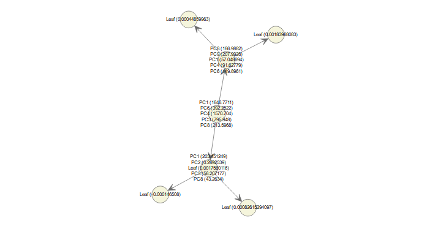

-
Bayesian approach and probabilistic programming

Source:XKCD comic. Most people working with statistical analysis are familiar with Bayes Theorem, but in doing probilistic programming there's a lot of nuances in implementing Bayes theorem. In this post I'll briefly summarize the Bayesian approach and show an example of working with mixed type of data (continuous and categorical) using Python's PYMC3 package (and there will be NO coin-flipping example). While there're many tutorials out there, it was not straightforward to figure out how to deal with categorical/dummy variables in PYMC3.
September 8th, 2018 - 15 minute read -Looking Deeper with LIME

Many machine learning 'black boxes' are based on some flavors of neural network or deep learning building blocks, which makes model interpretability a challenging task. While the stakes are low if a convolutional neural net misclassifies a Shar Pei for a bath towel, it's a different beast if AI is performing automated medical diagnostics, making decisions on credit applications, or even finding 'Person of Interest' . The new EU general data protection regulation (GDPR), effective May 25th, 2018, requires a "right to explanation" for human subjects of AI/automated system[1]. This means a subject/consumer has the right to obtain an explanation of the automated decision, and the right to opt out of a decision based solely on AI/automated algorithm that produces legal effects on them (i.e, job recruiting, loan applications) without human intervention. Back in 2016, researchers (Ribeiro et al) from University of Washington published an algorithm called LIME that addresses the need for model interpretability and evaluation by explaining the predictions of any classifier in an intuitive manner. In this post, I will apply LIME to assess the DenseNet melanoma classifier by visualizing feature importance.
April 30th, 2018 - 10 minute read -Interactive chord diagram in D3
This post revisits the taxi ride data to make an interactive circos diagram in D3. Originally presented in 2009 by Martin Krzywinsk in his paper "Circos: an Information Aesthetic for Comparative Genomics.", it has become widely used and appreciated outside of the genomic/bioinformatic community. Its aesthetics and features effectively display relationships between different entities or patterns in periodic data. For the taxi data, it's actually quite simple to create a circos Chord diagram by tweaking existing codes shared by users (i.e, AndrewRP, nbremer) on https://bl.ocks.org/ , plus I will break down the essential elements of the chord diagram.
March 26, 2018 - 10 minute read -Imputing missing data
Missing data is a familiar problem when working with raw data. In this post, I will compare three widely used methods for imputing (a.k.a, estimating) missing values. This is really for my own reference, because I often find myself asking the question "which imputation algorithm would be most appropriate" while staring at those 'NA's in the dataframe. While there is NO 'best' way to deal with missing data because it depends on the type of problems, I usually avoid imputing using the mean/median/mode value. The reason being it doesn't take into account possible relationships between variables and it introduces bias to the data. As a general rule, I would not include a variable that has more than 40% missing values in building a predictive model.
Februaru 12th, 2018 - 15 minute read -Binary Classifier for Melanoma Using MobileNet
I recently read an article about a team of researchers (led by Dr. Andre Esteva) tuning a Deep Learning model(InceptionV3) to detect melanoma, showing promising results toward automated medical diagnostic application. CDC reports that in the year 2014, there were 76,665 Americans diagnosed with melanoma resulting in 9,324 deaths. Currently, dermatologists can recognize advanced melanoma using standard criteria such as Asymmetry, Border irregularity, Color variation, Diameter and Evolving shape (aka, ABCDE)[1]. In case if you are wondering how well your eyes can detect malignant lesion, here's a sample collage of pictures (I will admit that when I tried, it was as good as tossing a coin).
January 10th, 2018 - 10 minute read -Sparse PCA and XGboost for predicting tumor type
 The Pan-Cancer intiative at The Cancer Genome Atlas (TCGA) Research Network has analyzed numerous types of tumor using different technologies to profile the genomic, transcriptomic and epigenomic landscapes. This body of work represents an approach to study cancers not only based on the organ of origin, but also the broader biomarker profiles [1]. For this post, high-throughput gene expression data are used to build a classifier for 5 tumor types: breast cancer, lung cancer, colorectal cancer, kidney cancer and prostate cancer. The public data was provided and maintained by TCGA, the raw RNA sequence data were normalized to Fragment per kilobase transcript per million mapped reads (FPKM) to adjust for differences in transcript lengths. The normalized data are compiled and hosted by UCI Machine Learning Repository.